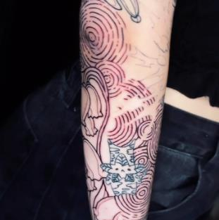

Villa Sarmiento · Zona Oeste
Entender el cuerpo. Respetar sus líneas.
Construimos una pieza que fluya con él. Atención privada y profesional, de lunes a sábados.
Los botones de contacto se activan cuando arrancamos con la versión oficial.
Datos
- Dirección
- Av. Presidente Perón 401, Villa Sarmiento
- Horario
- Lunes a sábados de 12 a 20 hs
- Atención
- Privada y profesional
- Presupuesto
- Cotizá tu estilo
Seis estilos,
un mismo nivel de exigencia.

Fine Line
Trabajo de línea fina. Mirá cómo lo resolvemos en el Instagram del estudio.
Un estudio privado,
con nombre propio.
“Se trata de entender el cuerpo, respetar sus líneas y construir una pieza que fluya con él.”
Del Instagram de Inari Tattoo Studio · +10 mil seguidores
Nueva imagen. Mismo nivel de exigencia. Detrás de cada trabajo hay un equipo de artistas: conocelos en el Instagram del estudio.
Cómo pedir turno
- 01Escribinos por mensaje directo o WhatsApp contando qué querés tatuarte y en qué zona del cuerpo.
- 02Te cotizamos según tu estilo.
- 03Coordinamos el día y la hora. Atendemos de lunes a sábados de 12 a 20 hs.
Contanos tu idea.
Av. Presidente Perón 401, Villa Sarmiento.
Los botones de contacto se activan cuando arrancamos con la versión oficial.
Los botones de contacto se activan cuando arrancamos con la versión oficial.